5 Data Visualization
The package ggplot2 is used to visualize data. Before starting you should load the tidyverse package, which includes ggplot2 and other tools, at the very top of your script.
5.1 Intro to ggplot2
Read in data
Start with a black canvas

Just adding the datset to the blank canvas, but nothing plotted yet.

You need to use aes() for every ggplot you make, and inside aes() we’ll put what our x and y axis will be.
We say what the x and y are, and it creates scales on each axis, but we didn’t tell it what to plot yet.

Need to add points.

What if we want to change the color of the points?

What if we want to color the points based on another variable

Basically, you can just keep adding to the initial plot to make your graph the best visualization to fit your data.
There are many different graphs you can make with ggplot. What graph you make will depend on what type of data you have and what you want to visual from your data.
The next couple sections will take the base of ggplot and show you examples with different types of points. They will start general then show you how to customize plots.
General information about customizing plots in ggplot: 1. ALLL THE COLORS IN THE WORLD https://www.datanovia.com/en/blog/awesome-list-of-657-r-color-names/ http://www.stat.columbia.edu/~tzheng/files/Rcolor.pdf
- change the type of points you plot with
geom_point(pch = blah):

Different Types of Points
Also, you can change the color and size of points by `geom_point(size = 3, color = “blue”).
- Built in themes:
theme_bw()
a variation on theme_grey() that uses a white background and thin grey grid lines.
theme_linedraw()
A theme with only black lines of various widths on white backgrounds, reminiscent of a line drawing.
theme_light()
similar to theme_linedraw() but with light grey lines and axes, to direct more attention towards the data.
theme_dark()
the dark cousin of theme_light(), with similar line sizes but a dark background. Useful to make thin colored lines pop out.
theme_minimal()
A minimalistic theme with no background annotations.
theme_classic()
A classic-looking theme, with x and y axis lines and no gridlines.
theme_void()
A completely empty theme
For more information about themes look here.
5.2 Histogram
Why make a histogram?
Histograms are a good place to start with your data, it will give you a visual representation of your data distribution. blah probably needs more, idk what to say.
theory of histograms…..
…. how to make a histogram by hand….
5.2.0.1 Stem-and-Leaf Plots
- related to histograms.
Load libraries and data
## # A tibble: 6 x 5
## film year rottentomatoes imdb metacritic
## <chr> <int> <int> <dbl> <int>
## 1 Avengers: Age of Ultron 2015 74 7.8 66
## 2 Cinderella 2015 85 7.1 67
## 3 Ant-Man 2015 80 7.8 64
## 4 Do You Believe? 2015 18 5.4 22
## 5 Hot Tub Time Machine 2 2015 14 5.1 29
## 6 The Water Diviner 2015 63 7.2 50Making a ggplot2 histogram, which will plot imdb scores.
## `stat_bin()` using `bins = 30`. Pick better value with `binwidth`.
Now lets make the bars doderblue and border them white.
## `stat_bin()` using `bins = 30`. Pick better value with `binwidth`.
You can also control the bin width of histograms, this code has a binwidth of 0.2 rating points
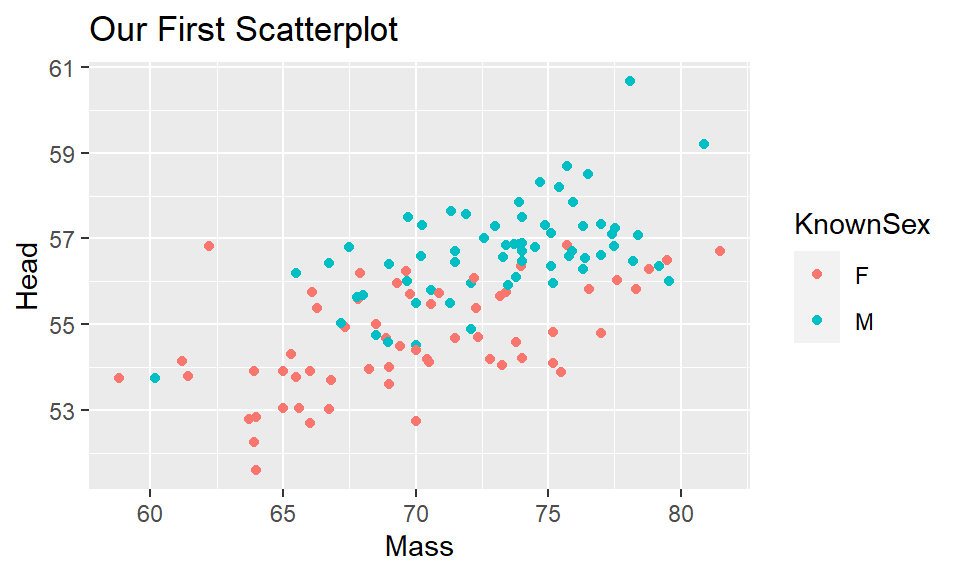
Further you can control where the boundaries of each bin lie on the x-axis
ggplot(df, aes(x = imdb)) +
geom_histogram(binwidth = 0.2, color="white", fill="dodgerblue",boundary=4) 
Just be careful with using the boundaries that it does not crop your histogram incorrectly. Changing histograms too much can lead to miss representing the data. (idk if that is said correctly)
Here is the full code with some additional customizations
ggplot(df, aes(x = imdb)) +
geom_histogram(binwidth = 0.2, color="white", fill="dodgerblue",boundary=4) +
theme_classic() +
ggtitle("Histogram of IMDB Ratings") +
xlab("Rating") +
ylab("Frequency")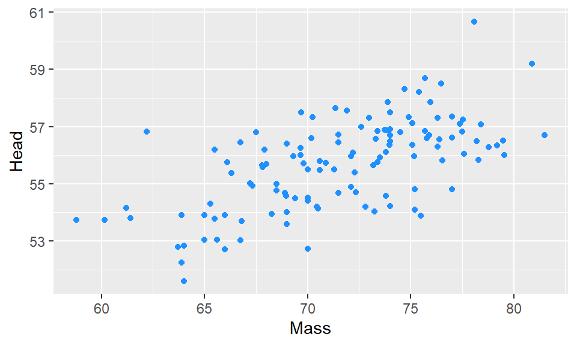
Instead of Viewing as a histogram, you can also show the data as a density curve
{, fig.width = 3, fig.height = 2} ggplot(df, aes(x = imdb)) + geom_density(color = "navy", fill = "dodgerblue")
Adding, alpha gives it a bit of transparency
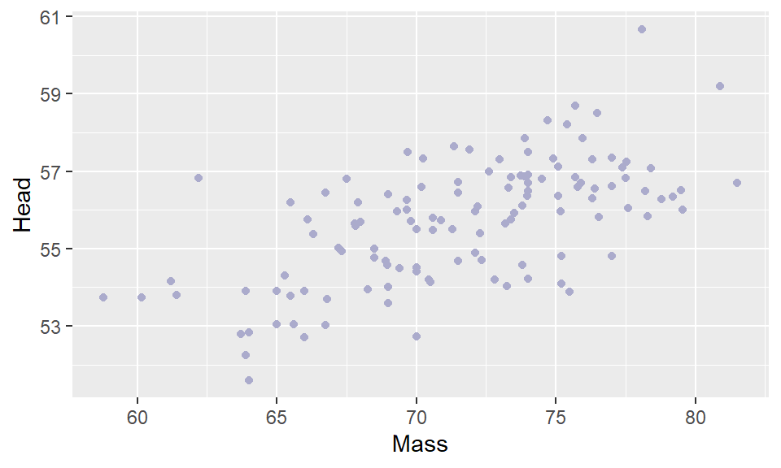
Comparing Distributions with side by side Histograms
Switching to new data
## # A tibble: 6 x 6
## country continent year lifeExp pop gdpPercap
## <chr> <chr> <chr> <dbl> <dbl> <dbl>
## 1 Afghanistan Asia year_1952 28.8 8425333 779.
## 2 Afghanistan Asia year_2007 43.8 31889923 975.
## 3 Albania Europe year_1952 55.2 1282697 1601.
## 4 Albania Europe year_2007 76.4 3600523 5937.
## 5 Algeria Africa year_1952 43.1 9279525 2449.
## 6 Algeria Africa year_2007 72.3 33333216 6223.## # A tibble: 6 x 6
## country continent year lifeExp pop gdpPercap
## <chr> <chr> <chr> <dbl> <dbl> <dbl>
## 1 Yemen, Rep. Asia year_1952 32.5 4963829 782.
## 2 Yemen, Rep. Asia year_2007 62.7 22211743 2281.
## 3 Zambia Africa year_1952 42.0 2672000 1147.
## 4 Zambia Africa year_2007 42.4 11746035 1271.
## 5 Zimbabwe Africa year_1952 48.5 3080907 407.
## 6 Zimbabwe Africa year_2007 43.5 12311143 470.First lets plot a histogram of life Expectancy across all countries
{rmessage=FALSE, warning=FALSE, fig.width = 3, fig.height = 2} ggplot(life, aes(x=lifeExp)) + geom_histogram(color='white', fill='lightseagreen') #warning is ok
Since we’ve combined data from the two years - we should separate histograms for each year. We can do this by Overlaiding histograms.
## `stat_bin()` using `bins = 30`. Pick better value with `binwidth`.
That graph was horrible, but if you costomize the plot by defining binwith and adding an alpha level it will get better.

Let add color now to make it even better, this makes the borders and fill of the bars black
ggplot(life, aes(x=lifeExp, fill=year)) +
geom_histogram(position="identity", alpha=.5, binwidth=2, color='black') +
scale_fill_manual(values = c("#999999", "#E69F00"))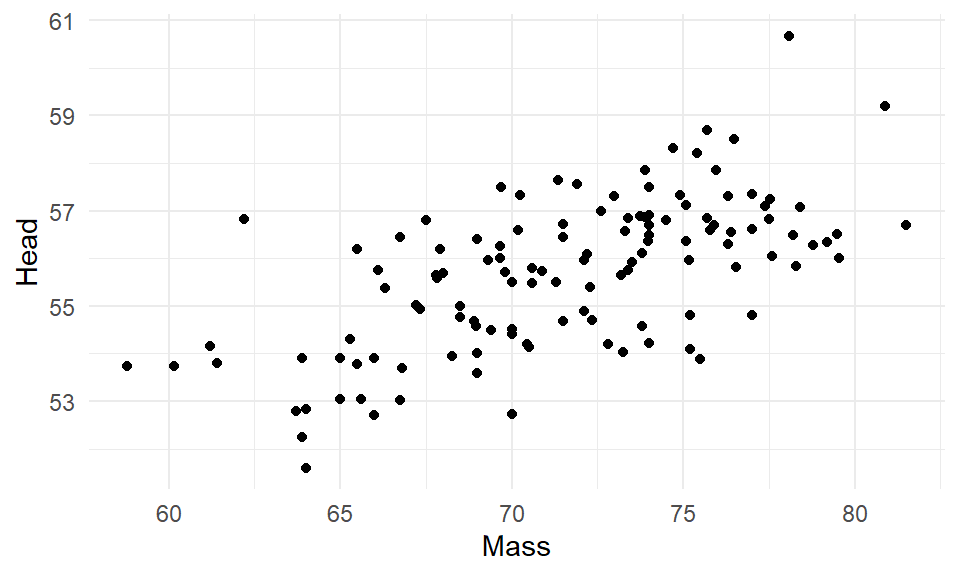
Comparing Distributions can also be done with geom_density, this is usually simpler to compare.
Initial plot

Adding customized colors
ggplot(life, aes(x=lifeExp, fill=year)) +
geom_density(aes(fill = year), alpha = 0.4) +
scale_fill_manual(values = c("#999999", "#E69F00"))
And adding a theme
5.3 Scatter
Scatter plots are used when you are trying to illustrate a trend in your data. These plots can be important in statistics because it can help show the correlation between two variables.
geom_point is used for scatter plots.
Lets look at the dataframe cheese:
## # A tibble: 6 x 9
## type sat_fat polysat_fat monosat_fat protein carb chol fiber kcal
## <chr> <dbl> <dbl> <dbl> <dbl> <dbl> <int> <dbl> <int>
## 1 blue 18.7 0.8 7.78 21.4 2.34 75 0 353
## 2 brick 18.8 0.784 8.60 23.2 2.79 94 0 371
## 3 brie 17.4 0.826 8.01 20.8 0.45 100 0 334
## 4 camembert 15.3 0.724 7.02 19.8 0.46 72 0 300
## 5 caraway 18.6 0.83 8.28 25.2 3.06 93 0 376
## 6 cheddar 21.1 0.942 9.39 24.9 1.28 105 0 403Start with a simple plot looking at the outcome of cholesterol on saturated fat intake.

Adding color in geom_point

Adding trend line with geom_smooth
 Here you can see it automatically puts a shaded area around your trend line, this is supposed to represent the confident interval. There is a way to get rid of it -
Here you can see it automatically puts a shaded area around your trend line, this is supposed to represent the confident interval. There is a way to get rid of it -
ggplot(cheese, aes(x=sat_fat, y=chol) ) +
geom_point(color = "purple") +
geom_smooth(method = "lm", se = FALSE)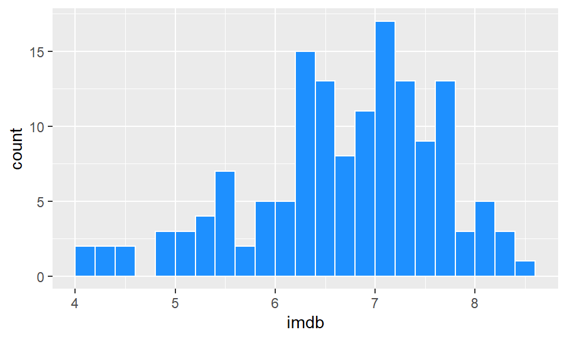
You can also change the color of the trend line, by adding to geom_smooth
ggplot(cheese, aes(x=sat_fat, y=chol) ) +
geom_point(color = "purple") +
geom_smooth(method = "lm", se= F, color = "black")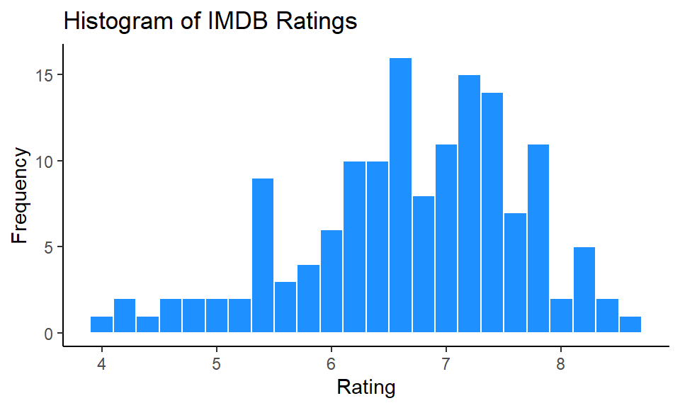
Label your x and y axis
ggplot(cheese, aes(x=sat_fat, y=chol) ) +
geom_point(color = "purple") +
geom_smooth(method = "lm", se= F, color = "black") +
xlab(" Saturated Fat Intake") +
ylab("Cholesterol")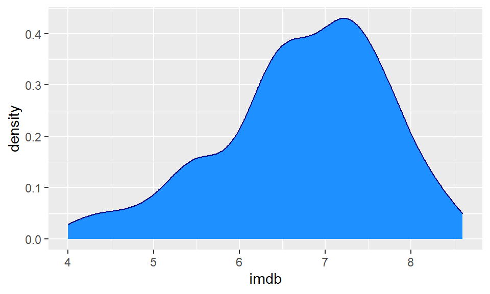
Add a title and a theme to make your graph complete
ggplot(cheese, aes(x=sat_fat, y=chol) ) +
geom_point(color = "purple") +
geom_smooth(method = "lm", se= F, color = "black") +
xlab(" Saturated Fat Intake") +
ylab("Cholesterol") +
ggtitle("Saturated Fat Intake and Cholesterol") +
theme_minimal()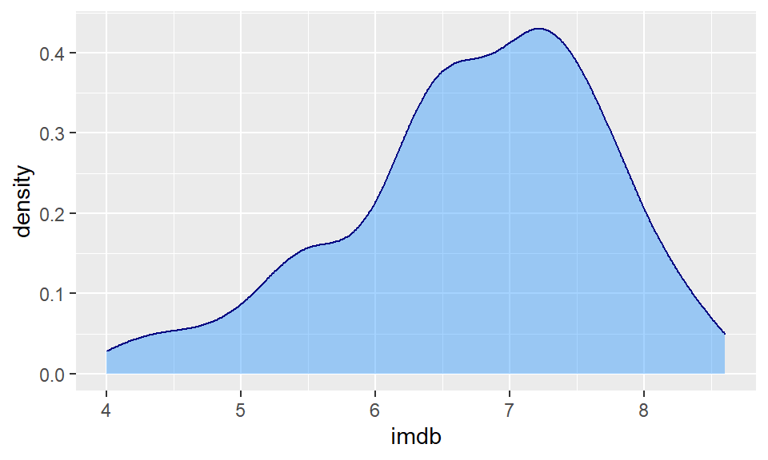
5.4 Line
Line graph help connect values (y-axis) over time (x-axis)
## # A tibble: 6 x 5
## year sex name n prop
## <int> <chr> <chr> <int> <dbl>
## 1 1916 Female Jennifer 5 0.00000461
## 2 1919 Female Jennifer 6 0.00000511
## 3 1920 Female Jennifer 7 0.00000563
## 4 1921 Female Jennifer 5 0.00000391
## 5 1922 Female Jennifer 7 0.00000561
## 6 1923 Female Jennifer 9 0.00000719## # A tibble: 6 x 5
## year sex name n prop
## <int> <chr> <chr> <int> <dbl>
## 1 2012 Female Jennifer 1923 0.000993
## 2 2013 Female Jennifer 1689 0.000878
## 3 2014 Female Jennifer 1521 0.000779
## 4 2015 Female Jennifer 1283 0.000660
## 5 2016 Female Jennifer 1159 0.000601
## 6 2017 Female Jennifer 1042 0.000556How to build up a line graph, start just like the other graphs

Look at data as points first
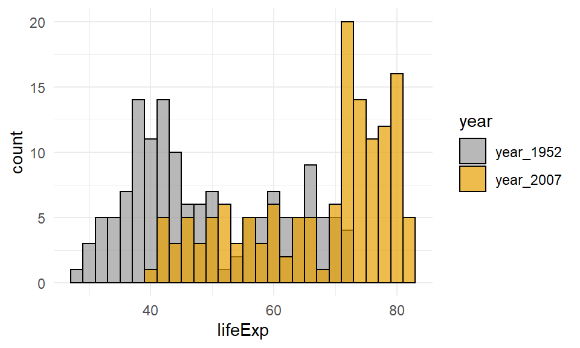
Then as a line
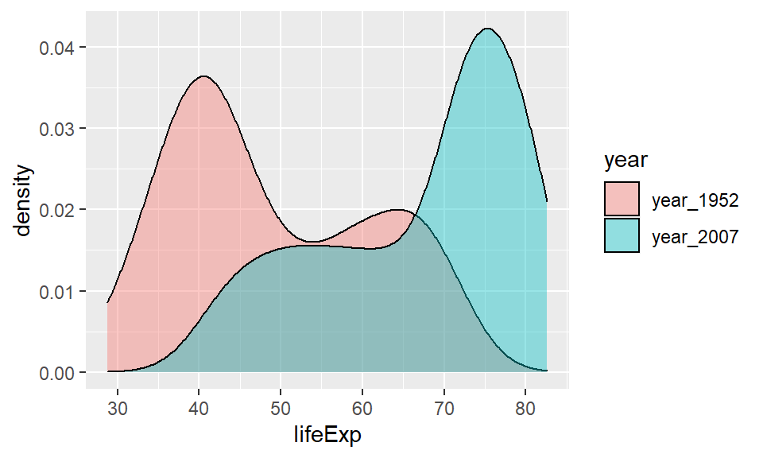
You can add points and line together

Changing Color of Line, but not the points
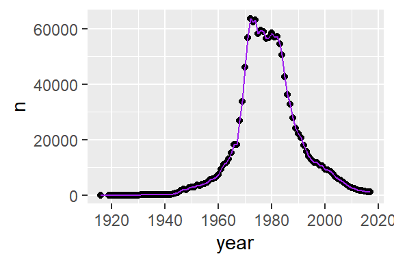
This will change the color of both the points and the line
Customize axis labels and title
ggplot(jennifer, aes(x=year, y=n) ) +
geom_line(color = "purple") +
xlab("Year") +
ylab("Number of Children Born") +
ggtitle("Popularity of Name Jennifer in USA")
Can change width of lines

There are many different style of lines here are a few examples


Plotting multiple lines on same graph
read in data
## Parsed with column specification:
## cols(
## year = col_integer(),
## sex = col_character(),
## name = col_character(),
## n = col_integer(),
## prop = col_double()
## )## # A tibble: 6 x 5
## year sex name n prop
## <int> <chr> <chr> <int> <dbl>
## 1 1880 Female Linda 27 0.000277
## 2 1881 Female Linda 38 0.000384
## 3 1882 Female Linda 36 0.000311
## 4 1883 Female Linda 49 0.000408
## 5 1884 Female Linda 33 0.000240
## 6 1885 Female Linda 60 0.000423## # A tibble: 6 x 5
## year sex name n prop
## <int> <chr> <chr> <int> <dbl>
## 1 2015 Female Jennifer 1283 0.000660
## 2 2015 Female Linda 425 0.000218
## 3 2016 Female Jennifer 1159 0.000601
## 4 2016 Female Linda 436 0.000226
## 5 2017 Female Jennifer 1042 0.000556
## 6 2017 Female Linda 404 0.000215Just one line
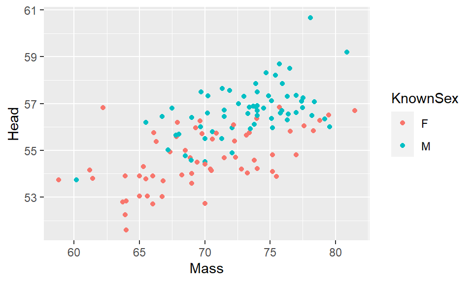
Two lines - one for each name.
ggplot(jenlinda, aes(x=year, y=n, color=name)) +
geom_line()+
xlab("Year") +
ylab("Number of Children Born") +
ggtitle("Popularity of Names Jennifer & Linda in USA")
5.5 Boxplot
Boxplot can also be used when looking at the distribution of data. These plots can show the median value and quartiles ranges of the data.
Import and look at data
## Parsed with column specification:
## cols(
## strain = col_character(),
## id = col_character(),
## day1 = col_double(),
## day2 = col_double(),
## day3 = col_double(),
## day4 = col_double(),
## dob = col_character(),
## mother = col_character(),
## sex = col_character(),
## wheel = col_integer(),
## startdate = col_character(),
## total = col_double(),
## age = col_integer(),
## group = col_character()
## )## # A tibble: 6 x 14
## strain id day1 day2 day3 day4 dob mother sex wheel startdate
## <chr> <chr> <dbl> <dbl> <dbl> <dbl> <chr> <chr> <chr> <int> <chr>
## 1 B6 692ao 12853 8156. 9028. 12516. 4/18~ 633ax male 9 10/9/2005
## 2 B6 656aa 2644 4012. 5237 7404. 12/1~ 593ar male 1 9/12/2005
## 3 B6 675ag 4004. 3054. 3816. 3761 2/9/~ 593ad male 5 10/13/20~
## 4 B6 675ai 11754. 8863 11784 11684 2/9/~ 593ad male 4 10/13/20~
## 5 B6 656af 6906. 5322. 10424. 8468. 12/1~ 593ar male 2 10/13/20~
## 6 B6 656al 6517 4440 5334. 9291 12/1~ 554aa male 8 10/9/2005
## # ... with 3 more variables: total <dbl>, age <int>, group <chr>## # A tibble: 6 x 14
## strain id day1 day2 day3 day4 dob mother sex wheel startdate
## <chr> <chr> <dbl> <dbl> <dbl> <dbl> <chr> <chr> <chr> <int> <chr>
## 1 Swiss 700af 11332 11000. 11858 14052 6/6/~ 674ah male 4 9/20/2005
## 2 Swiss 700ah 9208 7454. 9616. 11182 6/6/~ 674be male 3 9/20/2005
## 3 Swiss 700ai 5780 5260. 6736 7686. 6/7/~ 670ba male 2 9/20/2005
## 4 Swiss 700al 7226. 11567 8804. 12274. 6/3/~ 674bp male 1 9/20/2005
## 5 Swiss 700ap 4496. 5192. 6253 9181 6/3/~ 674af male 6 10/9/2005
## 6 Swiss 700ar 4021 6878. 5194. 5925 6/3/~ 674bt male 2 10/9/2005
## # ... with 3 more variables: total <dbl>, age <int>, group <chr>You can get more information about the data and general summaries by using the following code
##
## B6 F1-129B6 F1-B6129 S129 Swiss
## 14 22 15 16 13## strain id day1 day2
## Length:80 Length:80 Min. : 6.5 Min. : 0.5
## Class :character Class :character 1st Qu.: 5748.9 1st Qu.: 4727.0
## Mode :character Mode :character Median : 8707.2 Median : 7347.8
## Mean : 8953.8 Mean : 7503.7
## 3rd Qu.:11897.0 3rd Qu.:10789.6
## Max. :21815.5 Max. :15501.0
##
## day3 day4 dob mother
## Min. : 1 Min. : 3 Length:80 Length:80
## 1st Qu.: 4924 1st Qu.: 5854 Class :character Class :character
## Median : 8500 Median :10488 Mode :character Mode :character
## Mean : 8756 Mean :10951
## 3rd Qu.:12506 3rd Qu.:14815
## Max. :28515 Max. :30464
## NA's :4
## sex wheel startdate total
## Length:80 Min. :1.000 Length:80 Min. : 28
## Class :character 1st Qu.:3.000 Class :character 1st Qu.:25118
## Mode :character Median :5.000 Mode :character Median :32951
## Mean :5.013 Mean :36766
## 3rd Qu.:7.000 3rd Qu.:49044
## Max. :9.000 Max. :80789
## NA's :4
## age group
## Min. : 89.0 Length:80
## 1st Qu.:107.0 Class :character
## Median :130.0 Mode :character
## Mean :141.8
## 3rd Qu.:148.5
## Max. :311.0
## Plotting the data with geom_boxplot()
## Warning: Removed 4 rows containing non-finite values (stat_boxplot).
The warning message is ok - it’s saying some rows don’t have data. However, notice the outlier.
You can overlay the points on the boxplot, which can help you visualize the spread of the dta.
## Warning: Removed 4 rows containing non-finite values (stat_boxplot).## Warning: Removed 4 rows containing missing values (geom_point).
You can customizing colors by chaning the fill and color of boxplots
ggplot(wheels, aes(x = strain, y = total)) +
geom_boxplot(color="navy", fill="dodgerblue") +
geom_point(color="navy")## Warning: Removed 4 rows containing non-finite values (stat_boxplot).## Warning: Removed 4 rows containing missing values (geom_point).
You can also make the points wobble a bit… but careful it goes crazy…
ggplot(wheels, aes(x = strain, y = total)) +
geom_boxplot(color="navy", fill="dodgerblue") +
geom_jitter(color="navy")## Warning: Removed 4 rows containing non-finite values (stat_boxplot).## Warning: Removed 4 rows containing missing values (geom_point).
You can constrain it by setting a width value of how much wobble.
ggplot(wheels, aes(x = strain, y = total)) +
geom_boxplot(color="navy", fill="dodgerblue") +
geom_jitter(color="navy", width = .1) ## Warning: Removed 4 rows containing non-finite values (stat_boxplot).## Warning: Removed 4 rows containing missing values (geom_point).
Finish the graph by adding titles and labels etc.
ggplot(wheels, aes(x = strain, y = total)) +
geom_boxplot(color="navy", fill="dodgerblue") +
geom_jitter(color="navy", width = .1) +
xlab("Mouse Strain") +
ylab("Total Wheel Revolutions") +
ggtitle("Wheel Running By Different Mouse Strains") +
theme_classic()## Warning: Removed 4 rows containing non-finite values (stat_boxplot).## Warning: Removed 4 rows containing missing values (geom_point).
A couple of other things you might want to try:
- Make the outlier more noticeable
ggplot(wheels, aes(x = strain, y = total)) +
geom_boxplot(outlier.color = "green", outlier.size = 8)## Warning: Removed 4 rows containing non-finite values (stat_boxplot).
- If you prefer violin shapes to boxplots
## Warning: Removed 4 rows containing non-finite values (stat_ydensity).
- You can also color according to the x-axis category
## Warning: Removed 4 rows containing non-finite values (stat_boxplot).
- Adding points
## Warning: Removed 4 rows containing non-finite values (stat_boxplot).## Warning: Removed 4 rows containing missing values (geom_point).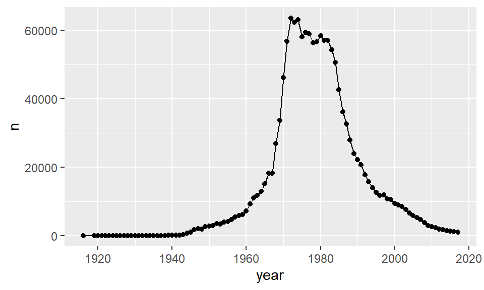
5.6 Bar Graphs
Bar graphs are used to visualize groups of differing amounts. Bar graphs are best when the changes between groups are larger.
Example 1. If you have a dataset where you HAVE already counted the number of each group
Import the number1s.csv data. This shows how many number 1 songs various artists have had in the UK singles charts.
## Parsed with column specification:
## cols(
## name = col_character(),
## total = col_integer()
## )## # A tibble: 6 x 2
## name total
## <chr> <int>
## 1 Elvis 21
## 2 The Beatles 17
## 3 Cliff Richard 14
## 4 Westlife 14
## 5 Madonna 13
## 6 Take That 12geom_col() is used when the data is already counted.
 Notice default order is alphabetical. However, you can reorder by putting reorder around the x-axis column.
Notice default order is alphabetical. However, you can reorder by putting reorder around the x-axis column.
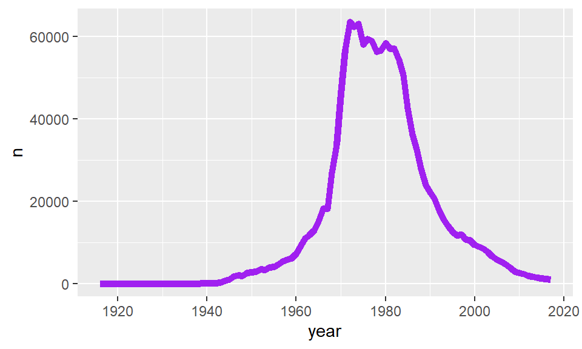
When changing color use ‘fill’ here because it’s a shape.
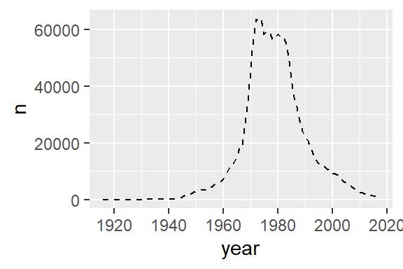
Then for the border of the bars use ‘color’.

Finish with final customizations
ggplot(df, aes(x = reorder(name, -total), y = total) ) +
geom_col(fill = "orange", color="brown") +
xlab("Artist") +
ylab("Total Number 1's") +
ggtitle("Number 1 hits in UK") +
theme_classic()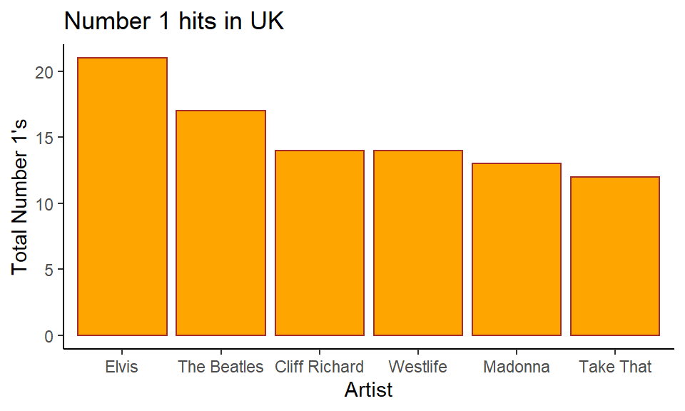
Example 2. If you have a dataset where you haven’t already counted the number of each group
We want to plot how many people have each type of pet.
This means pet will be on x-axis, and count on y-axis.
load in pets.csv dataset and look at the data.
## Parsed with column specification:
## cols(
## name = col_character(),
## pet = col_character()
## )## # A tibble: 6 x 2
## name pet
## <chr> <chr>
## 1 Leon Cat
## 2 Lesley Dog
## 3 Devon Dog
## 4 Timothy Dog
## 5 Paul None
## 6 Jody Cat## # A tibble: 6 x 2
## name pet
## <chr> <chr>
## 1 Dong Bird
## 2 Willie Dog
## 3 Kris Cat
## 4 Yong Dog
## 5 Andrea Cat
## 6 Lacy DogNotice ‘pet’ is categorical. We don’t yet have a ‘count’ of how many of each pet there is.
We can quickly look at the ‘count’ like this:
##
## Bird Cat Dog None
## 2 6 11 6We can make ggplot plot the frequency/count of each pet as a bar graph
Notice here, we use geom_bar() - and it counts for us.
We do not need to supply a y column.

Then just customize.
ggplot(pets, aes(pet)) +
geom_bar(color="black", fill="plum3") +
xlab("Pet")+
ylab("Total")+
ggtitle("Popularity of Pets in a Class")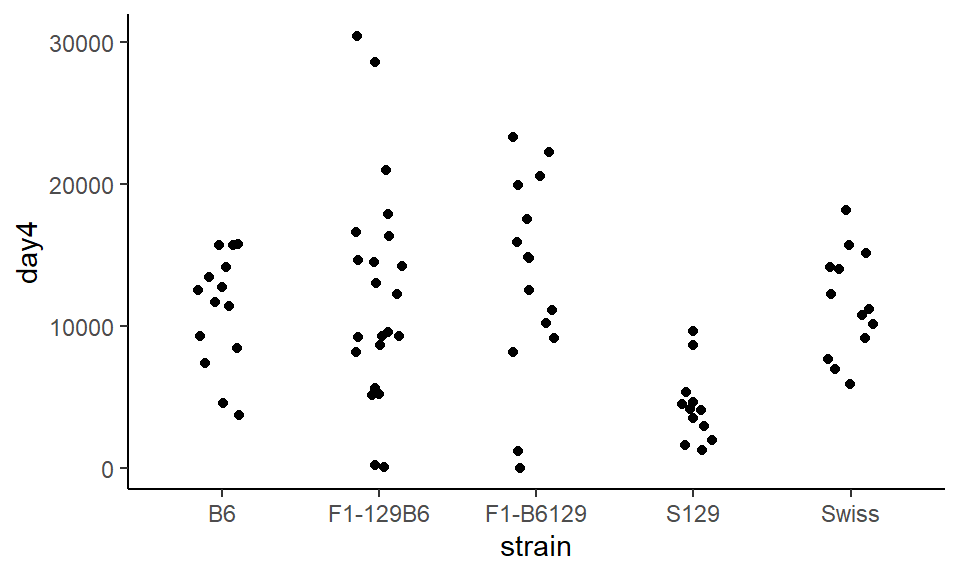